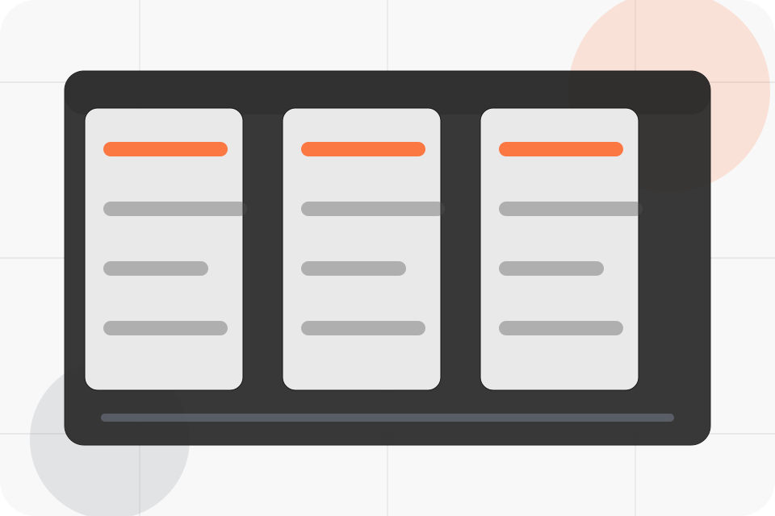
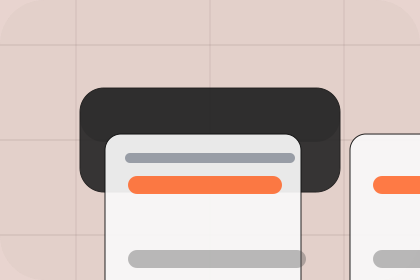

Start
How visitors begin this route and what detail is useful at the first step.
Process / 01
Process opens as a clear manufacturing decision hub: what Line offers, who it helps, why it matters, and which route to take first.
The first screen combines positioning, proof, primary action, and fast internal navigation, so people can act immediately or compare the rest of the process route with context.
Precision product hero
Select the closest route and Line keeps the next step, proof, and follow-up expectation aligned with capacity and quality confidence.

Process / 02
Brief explains the operating sequence so visitors can see how the first request becomes a clear recommendation and follow-up.
The steps are written from the visitor side: what they do first, what Line clarifies, what they receive, and how support continues.
Explore ProcessHow visitors begin this route and what detail is useful at the first step.
What Line reviews, filters, or explains before recommending the next move.
What the visitor receives afterward, including support, proof, or a handoff to the next page.
Process / 03
Drawings explains the operating sequence so visitors can see how the first request becomes a clear recommendation and follow-up.
The steps are written from the visitor side: what they do first, what Line clarifies, what they receive, and how support continues.
Explore Process
How visitors begin this route and what detail is useful at the first step.
Process / 04
Prototype explains the operating sequence so visitors can see how the first request becomes a clear recommendation and follow-up.
The steps are written from the visitor side: what they do first, what Line clarifies, what they receive, and how support continues.
Explore ProcessHow visitors begin this route and what detail is useful at the first step.
What Line reviews, filters, or explains before recommending the next move.
What the visitor receives afterward, including support, proof, or a handoff to the next page.
Process / 05
Production explains the practical scope, best-fit situations, and expected outcome so manufacturing visitors can compare options without decoding jargon.
The section keeps the offer concrete: what is included, who it is best for, what decision it supports, and which linked route gives the deeper detail.
Explore ProcessWho should use production and when it belongs in the process journey.
The practical benefit visitors should expect after choosing this route.
Where to compare details, pricing, support, or contact options before committing.
Process / 06
QA explains the operating sequence so visitors can see how the first request becomes a clear recommendation and follow-up.
The steps are written from the visitor side: what they do first, what Line clarifies, what they receive, and how support continues.
Explore ProcessHow visitors begin this route and what detail is useful at the first step.
What Line reviews, filters, or explains before recommending the next move.
What the visitor receives afterward, including support, proof, or a handoff to the next page.
Process / 07
Packaging explains the operating sequence so visitors can see how the first request becomes a clear recommendation and follow-up.
The steps are written from the visitor side: what they do first, what Line clarifies, what they receive, and how support continues.
Explore ProcessHow visitors begin this route and what detail is useful at the first step.
Process / 08
Delivery explains the operating sequence so visitors can see how the first request becomes a clear recommendation and follow-up.
The steps are written from the visitor side: what they do first, what Line clarifies, what they receive, and how support continues.
Explore ProcessHow visitors begin this route and what detail is useful at the first step.
What Line reviews, filters, or explains before recommending the next move.
What the visitor receives afterward, including support, proof, or a handoff to the next page.
Process / 09
Review explains the operating sequence so visitors can see how the first request becomes a clear recommendation and follow-up.
The steps are written from the visitor side: what they do first, what Line clarifies, what they receive, and how support continues.
Explore ProcessHow visitors begin this route and what detail is useful at the first step.
What Line reviews, filters, or explains before recommending the next move.
What the visitor receives afterward, including support, proof, or a handoff to the next page.
Process / 10
Line closes the process route with a clear action, a quick reminder of the value, and a low-friction way to send an RFQ.
Visitors who are ready can use the primary action. Visitors who are still comparing can scan the section links, proof, and support routes before they send an RFQ.
Send RFQThe final block keeps the choice simple: act now, compare one more proof route, or send enough detail for a focused response.
Send RFQcapacity and quality confidence
A production capability site with product-spec tables, precise media panels, facility proof, and RFQ routing. Process ends with a direct path to send an RFQ, plus enough context for visitors who still need to compare.

Send RFQ